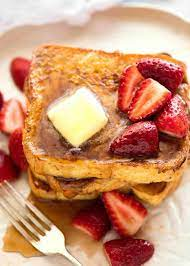

French Toast

Description
With so many toppings and breads there is an endless variety of French toast you can make.
But for this quick and easy French toast recipe you’ll need to start with some vanilla extract and cinnamon to create a rich flavor.
Ingredients
- 1 egg
- 1 teaspoon Pure Vanilla Extract
- 1/2 teaspoon Ground Cinnamon
- 1/4 cup milk
- 4 slices bread
Steps
- Beat egg, vanilla and cinnamon in shallow dish with wire whisk. Stir in milk.
- Dip bread in egg mixture, turning to coat both sides evenly.
- Cook bread slices on lightly greased nonstick griddle or skillet on medium heat until browned on both sides. Serve with Easy Spiced Syrup (recipe follows), if desired. Voila, easy French toast.
- Add 1 teaspoon Pure Vanilla Extract and 1/4 teaspoon Ground Cinnamon to 1 cup pancake syrup; stir well to mix. Serve warm, if desired.